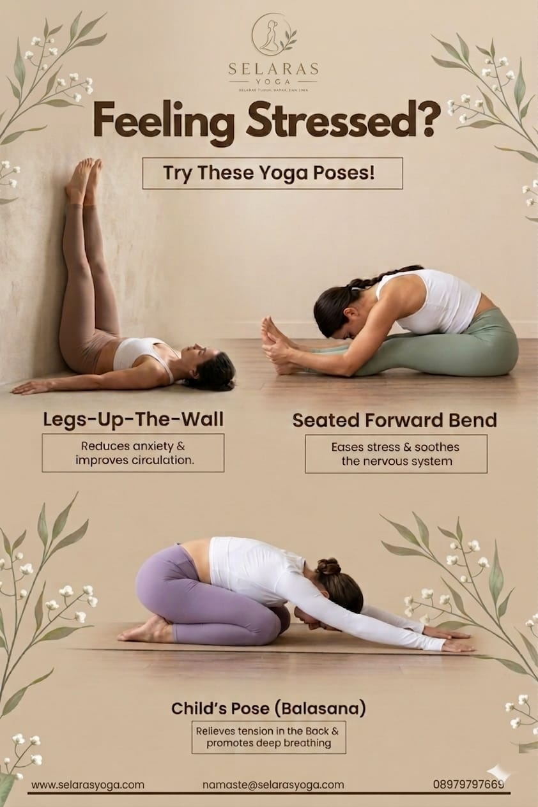

Merasa stress berlebihan dan sulit menenangkan pikiran? Yoga bisa menjadi cara alami untuk mengatasi stres, meredakan kecemasan, dan membantu tubuh kembali rileks hanya dalam 15 menit.

Pernah merasa lelah tanpa alasan yang jelas? Pikiran terus berjalan, tubuh terasa tegang, tapi kamu tetap harus menjalani hari seperti biasa.
Di tengah ritme hidup yang cepat, stress sering datang tanpa kita sadari. Dan yang lebih sulit — kita sering tidak tahu bagaimana cara melepaskannya.
Di sinilah yoga menjadi ruang untuk kembali. Bukan sekadar olahraga, tapi cara untuk pulang ke diri sendiri.
Stress bukan hanya ada di pikiran, tapi juga tersimpan di tubuh. Bahu yang kaku, napas yang pendek, bahkan rasa lelah yang tidak hilang setelah istirahat — semua itu adalah tanda tubuh menahan sesuatu.
Banyak orang mencoba mengabaikan stress, tapi justru itu yang membuatnya semakin menumpuk. Tubuh tetap menyimpan ketegangan yang lama-kelamaan mempengaruhi kesehatan dan keseimbangan emosi.
Yoga bekerja dengan cara yang berbeda dibanding metode lainnya. Ia tidak memaksa tubuh, tapi mengajak tubuh untuk kembali seimbang secara perlahan melalui gerakan dan napas.
Melalui latihan yang konsisten, yoga membantu:
Inilah mengapa yoga sering direkomendasikan sebagai salah satu cara alami untuk mengatasi stres dan kecemasan.
Kamu tidak perlu waktu lama untuk mulai merasakan manfaatnya. Cukup luangkan 15 menit setiap hari:
Yang penting bukan seberapa sempurna gerakannya, tapi seberapa hadir kamu di dalam setiap momen latihan.
Banyak orang berpikir yoga harus dilakukan dengan sempurna. Padahal, yang terpenting adalah memulai dan konsisten.
Jika kamu ingin mencoba lebih dalam, kamu bisa melihat berbagai kelas yoga di Selaras Yoga atau mengenal lebih jauh tentang Selaras Yoga yang dirancang untuk membantu tubuh dan pikiran kembali selaras.
Kadang yang kita butuhkan bukan solusi besar, tapi satu momen kecil untuk berhenti dan bernapas.
Mulai dari satu sesi sederhana, dan rasakan perbedaannya.
Lihat Kelas Yoga